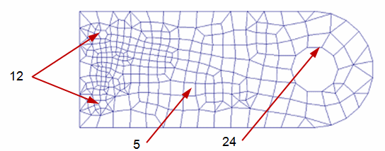

Mesh sizing
The Mesh command automatically produces a mesh using default meshing options.
-
The mesh is displayed as points on the body to give you an indication of pattern and distribution.
-
The mesh size is displayed in PromptBar.
Example:Current mesh has 3057 nodes and 985 elements.
-
You can use the Show Poor Quality command to identify areas where the mesh needs to be improved on individual parts and bodies. For more information, see Examining the mesh quality.
-
You can use this information to fine-tune the mesh density, shape, and boundary using one or more of the mesh sizing commands.
Sizing overview
Mesh sizing provides controls that refine the density of the mesh in areas of the model that require more intense study. For example, any area where model faces change shape rather abruptly is a good candidate for sizing. Curves and holes also represent areas where stresses may be higher.
On this flat part with two different hole diameters, you can use mesh sizing to accommodate holes of different sizes:
-
Surface mesh size=5 applied to the main body.
-
Edge mesh size=12 applied to the edges of the small holes.
-
Edge mesh size=24 applied to the edge of the large hole.

Mesh sizing provides more accuracy and results in fewer design problems. In some cases, it may produce faster solutions.
Refining the mesh
There are several ways you can refine the mesh. Each method provides a different level of control.
-
You can use the Subjective mesh size slider in the Mesh dialog box to adjust the mesh sizing visually. This applies sizing evenly across the entire model.
-
You can use the Edge Size, Surface Size, and Body Size commands on the ribbon to apply the mesh sizing to specific areas of geometry. These commands are available after the initial mesh is generated.

With the sizing commands, you can set a default mesh size or default number of elements, which is used for all geometry where a specific size or number of elements is not defined. You also can define a specific mesh size or number of elements along a line or on a surface.
There can be only one mesh sizing per element. However, a surface sizing on a face may have an edge with its own sizing. Similarly, faces may have common edges.
Body mesh sizing
You can use the Body Size command  to refine the mesh on solid bodies and surfaces. When you select this command, if
you have only one object in your model, it is selected automatically. If you have
multiple bodies or surfaces, you are prompted to select the ones you want to size.
to refine the mesh on solid bodies and surfaces. When you select this command, if
you have only one object in your model, it is selected automatically. If you have
multiple bodies or surfaces, you are prompted to select the ones you want to size.
There are several different methods available on the Body Size dialog box to specify a different value for the mesh. You can use the Tetrahedral Mesh Control options to change the size of the mesh elements inside a part (Tet Growth Ratio).
The mesh size on a solid body should be at least two elements thick.
Surface mesh sizing
Surface mesh sizing allows specific faces and surfaces to receive different sizing than the default for the model. If a mesh sizing already exists on one of the face edges, you have the option to override the sizing or leave the existing sizing.
For a model face or surface, you can use the Surface Size command  to override mesh sizing on curves associated with that surface, or to define a mesh
on all curves that do not currently have a mesh size. You specify a nominal Element
Size, which is adjusted to fit evenly into each curve. You can do this on the Surface Size dialog box.
to override mesh sizing on curves associated with that surface, or to define a mesh
on all curves that do not currently have a mesh size. You specify a nominal Element
Size, which is adjusted to fit evenly into each curve. You can do this on the Surface Size dialog box.
Edge mesh sizing
For a model edge, you can use the Edge Size command  to adjust sizing on one or more edges.
to adjust sizing on one or more edges.
Edge mesh sizing can either be defined by the number of elements on the edge or by the element size. Use the Edge Size dialog box to fine-tune the edge mesh.
For example, the default mesh on the part with holes shown at the top of this page will produce a mesh that is finer and coarser around different geometric features. You can use edge mesh sizing to increase the mesh size around large holes and decrease the mesh size around small holes, reducing stress concentrations.
Another method is to model the part using split faces and curves in Solid Edge. Split surfaces distribute loads and constraints more realistically.
Sizing application order
Mesh sizing is applied to the model in this order: body sizing, surface sizing, and edge sizing. For each body, surface, or edge that gets a special mesh control, a mesh sizing entry is created or updated in the Simulation pane. For example, Surface Size 1, Edge Size 1, Body Size 1.
Using the Simulation pane, you can:
-
Highlight or select a mesh size entry and review the associated model geometry.
-
Edit the mesh sizing control using the Edit Definition command on the mesh size shortcut menu.
You can change the colors used to highlight and select the geometry using the Highlight and Selected options on the Colors tab (Solid Edge Options dialog box).
How do I
Mesh the modelActivity: Use subjective mesh sizing
Activity: Apply a surface mesh to a sheet metal part
Activity: Size the mesh on an edge
Activity: Size the mesh on a surface
Learn more
MeshesExamining the mesh
Identifying areas of poor mesh quality
Look up more details
Mesh dialog boxMesh Options dialog box
Body Size dialog box
Edge Size dialog box
Surface Size dialog box
Check Element Quality